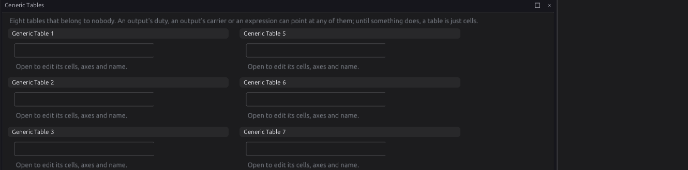
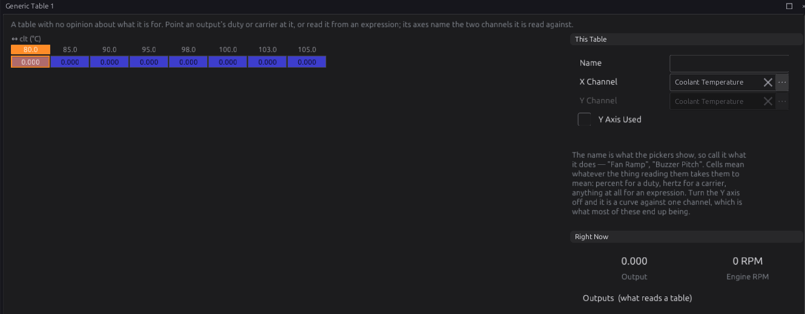
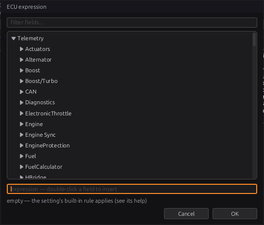

Generic tables and expressions¶
Intermediate → Advanced
In one sentence: generic tables are eight spare maps you can point anything at, and expressions are short formulas —
clt > 95 and rpm > 800— that many settings use to decide when something happens or how much.
What it does¶
Basic
Most of this ECU's behaviour is fixed tables and settings. Two tools let you add your own:
- Generic tables (Configuration ▸ Generic Tables): eight tables that belong to nobody. An output's duty or frequency, or an expression, can read one. A fan duty against coolant, a buzzer pitch against engine speed, a bleed valve against boost.
- Expressions: a formula typed into a setting. They are used by:
| Where | Setting | Chapter |
|---|---|---|
| Outputs | Turn On When, Turn Off When, Duty Expression, Frequency Expression | 18 |
| Sensors | Precondition (when a sensor's checks run) | 17 |
| Closed-loop lambda | Learn While | 23 |
| Launch | Arm When | 26 |
| Traction control | Active When | 26 |
| Cruise control | Enable When, Set When, Resume When, Cancel When and the others | 27 |
| Engine protection | each threshold monitor's Condition | 29 |
| Onboard logging | Log While, Stop When | 42 |
The studio compiles what you type into a small program and stores that in the tune; the ECU runs it. The ECU never sees the text, only the program.
How it works¶
Intermediate
1 · Generic tables¶
Each of the eight has:
- a Name — what the pickers show, so call it what it does ("Fan Ramp");
- an X Channel and a Y Channel — the two channels it is read against;
- Y Axis Used — off (the default), it is a curve against the X channel only;
- up to 16 breakpoints on each axis.
The cells have no units: they mean whatever the thing reading them takes them to mean — % for an output's duty, Hz for its frequency, anything for an expression. The Right Now panel shows what the table gives at this moment.


An output reads a table when its Value From is Table and its Duty Table names it (chapter 18). Any other table in the tune can be named there too; it is read at its own axes.
2 · What an expression can say¶
| You write | Means |
|---|---|
rpm, clt, map, vehicle_spd … |
a live channel, by its name |
launch.enabled, [#rev_limiter.hard_limit_rpm] |
a setting, by its path, in its own units (the ones the settings reference lists, whatever the studio displays) |
2500, 0.5, 95C, 200F, 1500ms, 2s |
a number; a unit written flush against it is converted to the other side's unit |
+ - * / |
arithmetic |
> >= < <= == != |
comparison: 1 for true, 0 for false |
and / &&, or / \|\|, not / ! |
logic |
( ) |
grouping |
Operators bind in the usual order: not and minus, then * /, then + -, then comparisons, then
== / !=, then and, then or.
Functions:
| Function | Gives |
|---|---|
min(a, b), max(a, b) |
the smaller / larger |
abs(a) |
the size, without the sign |
clamp(x, lo, hi) |
x held between lo and hi |
select(c, a, b) |
a if c is true, else b |
bit(word, n) |
bit n (0–31) of a status word |
age(channel) |
milliseconds since that channel was last updated |
table(name) |
a table, read at its own axes, as the ECU reads it |
interp(name, x) |
a table's curve, read at the x you give |
A table is named by its registry name, such as generic_tables_table_1. The Expression window lists
them.
Some things the studio accepts on a page are not available to the ECU: ^, floor, mod,
sin, cos, sqrt, lerp, and page values written [@…] or [%…]. The Expression window says so
when you use one.
== treats two values within 0.005 of each other as equal, so gear == 3 works on a gear that
arrives as 3.0.
3 · When a channel has no value¶
A channel with no value — a sensor not fitted, failed, or gone quiet — cannot make a condition true. The rules:
- A comparison involving it is false.
andwith it is false.orcan still be true from its other side: with MAP dead,map > 150 or tps > 80is still true at full throttle.notof it is still false, not true.not (oil_pressure < 100)does not become true because the oil pressure sensor died.- Arithmetic with it has no value either; so does division by zero.
- A number-giving expression (an output's duty or frequency) with no value gives no answer, and the output falls back to its Failsafe (chapter 18).
age(channel)always works: it is how you ask "has this gone quiet?".
An expression has no memory: it answers "what is true now". "For 5 seconds" belongs to the setting that uses it (a delay, a timeout), not to the expression.
4 · Empty, and too long¶
- Empty means the setting's own built-in rule applies — each setting's help says what that is (Launch Arm When empty arms while standing still with the throttle open; an output with both conditions empty has no gate, chapter 18).
- Each setting has a fixed space for its program (48 or 64 bytes). The Expression window shows how much you have used, and refuses one that does not fit.
- An expression that does not compile is not stored: the setting keeps its last good program. The Expression window shows the error.
Before you start¶
Basic
- Know the channel names you want. The Expression window lists every one, with a filter box.
Setting it up¶
Intermediate
Writing an expression¶
Type straight into the setting's box, or press fx at its right-hand end to open the ECU expression window:

- Find a channel or setting in the tree (type in filter fields… to narrow it) and double-click it to insert it.
- Type the rest. The line under the expression says whether it compiles and how much space it uses.
- OK stores it. OK will not store one the ECU would reject.
The ✕ in a setting's box clears it back to empty (the built-in rule).
Using a generic table¶
- Open Configuration ▸ Generic Tables ▸ Generic Table 1. Give it a Name.
- Pick the X Channel (and the Y, with Y Axis Used, if you need a second).
- Set the axis breakpoints and fill the cells.
- Point something at it: an output's Duty Table, or
table(generic_tables_table_1)in an expression.
Worked examples¶
Intermediate
Example 1 — a threshold monitor for oil pressure
oil_pressure < 100 and rpm > 2000 — true when oil pressure is low while running. If the oil
pressure sensor fails, the comparison is false and the monitor does not cut (chapter 29).
Example 2 — has the sensor gone quiet?
age(oil_pressure) > 1s — true when the oil pressure channel has not been updated for a second.
Example 3 — a fan on a curve
Generic Table 1 named "Fan Ramp", X Channel coolant, breakpoints 80 … 105 °C, cells 0 → 100 %.
A PWM output with Value From Table, Duty Table "Fan Ramp", and Turn On When clt > 85C.
Example 4 — launch on the clutch
Launch Arm When: clutch_sw and vehicle_spd < 5. Launch holds only while the clutch is
pressed and the car is (nearly) still.
Example 5 — a duty that follows battery voltage
Duty Expression clamp(60 * 13.5 / battery, 0, 100) — 60 % at 13.5 V, more as the voltage
falls. With no battery reading there is no answer, and the output uses its Failsafe.
Tuning it¶
Advanced
- Leave margin on a noisy channel:
clt > 95on a channel that wanders by half a degree switches on and off. Give the setting a separate Turn Off When (clt < 92) where it has one. - Use
orfor "either of these", knowing a dead channel on one side cannot trigger it on its own. - Keep expressions short. A long one is hard to check and may not fit.
Diagnostics¶
Intermediate
- A threshold monitor whose condition does not compile against this firmware sets P17C0 and is disarmed (chapter 29).
- The ECU checks every stored program when the tune loads and refuses one that is damaged.
Troubleshooting¶
Basic → Advanced
| Symptom | Likely causes | Check |
|---|---|---|
| The box keeps the old expression | The new one does not compile | Open the fx window: the error is shown |
| "has no ECU instruction" | ^, floor, mod, sin, cos, sqrt or lerp used in an ECU setting |
Rewrite without it |
| "unknown channel" | A typo, or a channel this firmware does not have | Pick it from the tree |
| Condition never true | A channel in it has no value | The channel on a gauge; age() |
| Output ignores its table | Value From not Table, or the Duty Table not set | The output page |
| Table always gives the first cell | The X channel is below the first breakpoint, or has no value | The channel; the breakpoints |
Settings reference¶
| Setting | What it does |
|---|---|
Table 1 Namegeneric_tables.name_1Range: 0 to 0 Default: 0 |
What this table IS, in your words — "Fan Ramp", "Buzzer Pitch". Eight numbered tables are unreadable without it, and the name is what the pickers show. |
Table 2 Namegeneric_tables.name_2Range: 0 to 0 Default: 0 |
What this table IS, in your words — "Fan Ramp", "Buzzer Pitch". Eight numbered tables are unreadable without it, and the name is what the pickers show. |
Table 3 Namegeneric_tables.name_3Range: 0 to 0 Default: 0 |
What this table IS, in your words — "Fan Ramp", "Buzzer Pitch". Eight numbered tables are unreadable without it, and the name is what the pickers show. |
Table 4 Namegeneric_tables.name_4Range: 0 to 0 Default: 0 |
What this table IS, in your words — "Fan Ramp", "Buzzer Pitch". Eight numbered tables are unreadable without it, and the name is what the pickers show. |
Table 5 Namegeneric_tables.name_5Range: 0 to 0 Default: 0 |
What this table IS, in your words — "Fan Ramp", "Buzzer Pitch". Eight numbered tables are unreadable without it, and the name is what the pickers show. |
Table 6 Namegeneric_tables.name_6Range: 0 to 0 Default: 0 |
What this table IS, in your words — "Fan Ramp", "Buzzer Pitch". Eight numbered tables are unreadable without it, and the name is what the pickers show. |
Table 7 Namegeneric_tables.name_7Range: 0 to 0 Default: 0 |
What this table IS, in your words — "Fan Ramp", "Buzzer Pitch". Eight numbered tables are unreadable without it, and the name is what the pickers show. |
Table 8 Namegeneric_tables.name_8Range: 0 to 0 Default: 0 |
What this table IS, in your words — "Fan Ramp", "Buzzer Pitch". Eight numbered tables are unreadable without it, and the name is what the pickers show. |
Generic Table 1 X Channelgeneric_tables.table_1_x_srcRange: -1 to 32767 Default: 319 |
WHICH SIGNAL the X axis of 'Generic Table 1' is looked up on. The axis holds the breakpoints; this says what is compared against them, so changing it re-points the table at a different quantity without moving a single cell — and the breakpoints, chosen for the old signal's range and units, will almost certainly need redrawing. |
Generic Table 1 Y Channelgeneric_tables.table_1_y_srcRange: -1 to 32767 Default: 61 |
WHICH SIGNAL the Y axis of 'Generic Table 1' is looked up on. The axis holds the breakpoints; this says what is compared against them, so changing it re-points the table at a different quantity without moving a single cell — and the breakpoints, chosen for the old signal's range and units, will almost certainly need redrawing. |
Generic Table 1 Y Axis Enabledgeneric_tables.table_1_y_enRange: Off or On Default: Off |
Use the Y axis of 'Generic Table 1' as a real dimension. Off, the table collapses to a curve on its remaining axes and this one is ignored entirely — the right default for most optional axes, since a dimension nobody calibrates is a set of duplicate rows that still has to be kept in step. |
Generic Table 2 X Channelgeneric_tables.table_2_x_srcRange: -1 to 32767 Default: 319 |
WHICH SIGNAL the X axis of 'Generic Table 2' is looked up on. The axis holds the breakpoints; this says what is compared against them, so changing it re-points the table at a different quantity without moving a single cell — and the breakpoints, chosen for the old signal's range and units, will almost certainly need redrawing. |
Generic Table 2 Y Channelgeneric_tables.table_2_y_srcRange: -1 to 32767 Default: 61 |
WHICH SIGNAL the Y axis of 'Generic Table 2' is looked up on. The axis holds the breakpoints; this says what is compared against them, so changing it re-points the table at a different quantity without moving a single cell — and the breakpoints, chosen for the old signal's range and units, will almost certainly need redrawing. |
Generic Table 2 Y Axis Enabledgeneric_tables.table_2_y_enRange: Off or On Default: Off |
Use the Y axis of 'Generic Table 2' as a real dimension. Off, the table collapses to a curve on its remaining axes and this one is ignored entirely — the right default for most optional axes, since a dimension nobody calibrates is a set of duplicate rows that still has to be kept in step. |
Generic Table 3 X Channelgeneric_tables.table_3_x_srcRange: -1 to 32767 Default: 319 |
WHICH SIGNAL the X axis of 'Generic Table 3' is looked up on. The axis holds the breakpoints; this says what is compared against them, so changing it re-points the table at a different quantity without moving a single cell — and the breakpoints, chosen for the old signal's range and units, will almost certainly need redrawing. |
Generic Table 3 Y Channelgeneric_tables.table_3_y_srcRange: -1 to 32767 Default: 61 |
WHICH SIGNAL the Y axis of 'Generic Table 3' is looked up on. The axis holds the breakpoints; this says what is compared against them, so changing it re-points the table at a different quantity without moving a single cell — and the breakpoints, chosen for the old signal's range and units, will almost certainly need redrawing. |
Generic Table 3 Y Axis Enabledgeneric_tables.table_3_y_enRange: Off or On Default: Off |
Use the Y axis of 'Generic Table 3' as a real dimension. Off, the table collapses to a curve on its remaining axes and this one is ignored entirely — the right default for most optional axes, since a dimension nobody calibrates is a set of duplicate rows that still has to be kept in step. |
Generic Table 4 X Channelgeneric_tables.table_4_x_srcRange: -1 to 32767 Default: 319 |
WHICH SIGNAL the X axis of 'Generic Table 4' is looked up on. The axis holds the breakpoints; this says what is compared against them, so changing it re-points the table at a different quantity without moving a single cell — and the breakpoints, chosen for the old signal's range and units, will almost certainly need redrawing. |
Generic Table 4 Y Channelgeneric_tables.table_4_y_srcRange: -1 to 32767 Default: 61 |
WHICH SIGNAL the Y axis of 'Generic Table 4' is looked up on. The axis holds the breakpoints; this says what is compared against them, so changing it re-points the table at a different quantity without moving a single cell — and the breakpoints, chosen for the old signal's range and units, will almost certainly need redrawing. |
Generic Table 4 Y Axis Enabledgeneric_tables.table_4_y_enRange: Off or On Default: Off |
Use the Y axis of 'Generic Table 4' as a real dimension. Off, the table collapses to a curve on its remaining axes and this one is ignored entirely — the right default for most optional axes, since a dimension nobody calibrates is a set of duplicate rows that still has to be kept in step. |
Generic Table 5 X Channelgeneric_tables.table_5_x_srcRange: -1 to 32767 Default: 319 |
WHICH SIGNAL the X axis of 'Generic Table 5' is looked up on. The axis holds the breakpoints; this says what is compared against them, so changing it re-points the table at a different quantity without moving a single cell — and the breakpoints, chosen for the old signal's range and units, will almost certainly need redrawing. |
Generic Table 5 Y Channelgeneric_tables.table_5_y_srcRange: -1 to 32767 Default: 61 |
WHICH SIGNAL the Y axis of 'Generic Table 5' is looked up on. The axis holds the breakpoints; this says what is compared against them, so changing it re-points the table at a different quantity without moving a single cell — and the breakpoints, chosen for the old signal's range and units, will almost certainly need redrawing. |
Generic Table 5 Y Axis Enabledgeneric_tables.table_5_y_enRange: Off or On Default: Off |
Use the Y axis of 'Generic Table 5' as a real dimension. Off, the table collapses to a curve on its remaining axes and this one is ignored entirely — the right default for most optional axes, since a dimension nobody calibrates is a set of duplicate rows that still has to be kept in step. |
Generic Table 6 X Channelgeneric_tables.table_6_x_srcRange: -1 to 32767 Default: 319 |
WHICH SIGNAL the X axis of 'Generic Table 6' is looked up on. The axis holds the breakpoints; this says what is compared against them, so changing it re-points the table at a different quantity without moving a single cell — and the breakpoints, chosen for the old signal's range and units, will almost certainly need redrawing. |
Generic Table 6 Y Channelgeneric_tables.table_6_y_srcRange: -1 to 32767 Default: 61 |
WHICH SIGNAL the Y axis of 'Generic Table 6' is looked up on. The axis holds the breakpoints; this says what is compared against them, so changing it re-points the table at a different quantity without moving a single cell — and the breakpoints, chosen for the old signal's range and units, will almost certainly need redrawing. |
Generic Table 6 Y Axis Enabledgeneric_tables.table_6_y_enRange: Off or On Default: Off |
Use the Y axis of 'Generic Table 6' as a real dimension. Off, the table collapses to a curve on its remaining axes and this one is ignored entirely — the right default for most optional axes, since a dimension nobody calibrates is a set of duplicate rows that still has to be kept in step. |
Generic Table 7 X Channelgeneric_tables.table_7_x_srcRange: -1 to 32767 Default: 319 |
WHICH SIGNAL the X axis of 'Generic Table 7' is looked up on. The axis holds the breakpoints; this says what is compared against them, so changing it re-points the table at a different quantity without moving a single cell — and the breakpoints, chosen for the old signal's range and units, will almost certainly need redrawing. |
Generic Table 7 Y Channelgeneric_tables.table_7_y_srcRange: -1 to 32767 Default: 61 |
WHICH SIGNAL the Y axis of 'Generic Table 7' is looked up on. The axis holds the breakpoints; this says what is compared against them, so changing it re-points the table at a different quantity without moving a single cell — and the breakpoints, chosen for the old signal's range and units, will almost certainly need redrawing. |
Generic Table 7 Y Axis Enabledgeneric_tables.table_7_y_enRange: Off or On Default: Off |
Use the Y axis of 'Generic Table 7' as a real dimension. Off, the table collapses to a curve on its remaining axes and this one is ignored entirely — the right default for most optional axes, since a dimension nobody calibrates is a set of duplicate rows that still has to be kept in step. |
Generic Table 8 X Channelgeneric_tables.table_8_x_srcRange: -1 to 32767 Default: 319 |
WHICH SIGNAL the X axis of 'Generic Table 8' is looked up on. The axis holds the breakpoints; this says what is compared against them, so changing it re-points the table at a different quantity without moving a single cell — and the breakpoints, chosen for the old signal's range and units, will almost certainly need redrawing. |
Generic Table 8 Y Channelgeneric_tables.table_8_y_srcRange: -1 to 32767 Default: 61 |
WHICH SIGNAL the Y axis of 'Generic Table 8' is looked up on. The axis holds the breakpoints; this says what is compared against them, so changing it re-points the table at a different quantity without moving a single cell — and the breakpoints, chosen for the old signal's range and units, will almost certainly need redrawing. |
Generic Table 8 Y Axis Enabledgeneric_tables.table_8_y_enRange: Off or On Default: Off |
Use the Y axis of 'Generic Table 8' as a real dimension. Off, the table collapses to a curve on its remaining axes and this one is ignored entirely — the right default for most optional axes, since a dimension nobody calibrates is a set of duplicate rows that still has to be kept in step. |
Table 1 X Axis binsgeneric_tables.t1_x_axis_nRange: 2 to 16 Default: 8 |
How many breakpoints of 'Table 1 X Axis' are LIVE, out of 16 allocated. Shrinking the axis does not delete the values past the end — they stay in the tune and reappear if it is grown again. Every table sharing this axis is resized with it. Fewer, well-placed breakpoints beat many evenly-spaced ones: resolution is only worth spending where the surface actually bends. |
Table 1 Y Axis binsgeneric_tables.t1_y_axis_nRange: 2 to 16 Default: 8 |
How many breakpoints of 'Table 1 Y Axis' are LIVE, out of 16 allocated. Shrinking the axis does not delete the values past the end — they stay in the tune and reappear if it is grown again. Every table sharing this axis is resized with it. Fewer, well-placed breakpoints beat many evenly-spaced ones: resolution is only worth spending where the surface actually bends. |
Table 2 X Axis binsgeneric_tables.t2_x_axis_nRange: 2 to 16 Default: 8 |
How many breakpoints of 'Table 2 X Axis' are LIVE, out of 16 allocated. Shrinking the axis does not delete the values past the end — they stay in the tune and reappear if it is grown again. Every table sharing this axis is resized with it. Fewer, well-placed breakpoints beat many evenly-spaced ones: resolution is only worth spending where the surface actually bends. |
Table 2 Y Axis binsgeneric_tables.t2_y_axis_nRange: 2 to 16 Default: 8 |
How many breakpoints of 'Table 2 Y Axis' are LIVE, out of 16 allocated. Shrinking the axis does not delete the values past the end — they stay in the tune and reappear if it is grown again. Every table sharing this axis is resized with it. Fewer, well-placed breakpoints beat many evenly-spaced ones: resolution is only worth spending where the surface actually bends. |
Table 3 X Axis binsgeneric_tables.t3_x_axis_nRange: 2 to 16 Default: 8 |
How many breakpoints of 'Table 3 X Axis' are LIVE, out of 16 allocated. Shrinking the axis does not delete the values past the end — they stay in the tune and reappear if it is grown again. Every table sharing this axis is resized with it. Fewer, well-placed breakpoints beat many evenly-spaced ones: resolution is only worth spending where the surface actually bends. |
Table 3 Y Axis binsgeneric_tables.t3_y_axis_nRange: 2 to 16 Default: 8 |
How many breakpoints of 'Table 3 Y Axis' are LIVE, out of 16 allocated. Shrinking the axis does not delete the values past the end — they stay in the tune and reappear if it is grown again. Every table sharing this axis is resized with it. Fewer, well-placed breakpoints beat many evenly-spaced ones: resolution is only worth spending where the surface actually bends. |
Table 4 X Axis binsgeneric_tables.t4_x_axis_nRange: 2 to 16 Default: 8 |
How many breakpoints of 'Table 4 X Axis' are LIVE, out of 16 allocated. Shrinking the axis does not delete the values past the end — they stay in the tune and reappear if it is grown again. Every table sharing this axis is resized with it. Fewer, well-placed breakpoints beat many evenly-spaced ones: resolution is only worth spending where the surface actually bends. |
Table 4 Y Axis binsgeneric_tables.t4_y_axis_nRange: 2 to 16 Default: 8 |
How many breakpoints of 'Table 4 Y Axis' are LIVE, out of 16 allocated. Shrinking the axis does not delete the values past the end — they stay in the tune and reappear if it is grown again. Every table sharing this axis is resized with it. Fewer, well-placed breakpoints beat many evenly-spaced ones: resolution is only worth spending where the surface actually bends. |
Table 5 X Axis binsgeneric_tables.t5_x_axis_nRange: 2 to 16 Default: 8 |
How many breakpoints of 'Table 5 X Axis' are LIVE, out of 16 allocated. Shrinking the axis does not delete the values past the end — they stay in the tune and reappear if it is grown again. Every table sharing this axis is resized with it. Fewer, well-placed breakpoints beat many evenly-spaced ones: resolution is only worth spending where the surface actually bends. |
Table 5 Y Axis binsgeneric_tables.t5_y_axis_nRange: 2 to 16 Default: 8 |
How many breakpoints of 'Table 5 Y Axis' are LIVE, out of 16 allocated. Shrinking the axis does not delete the values past the end — they stay in the tune and reappear if it is grown again. Every table sharing this axis is resized with it. Fewer, well-placed breakpoints beat many evenly-spaced ones: resolution is only worth spending where the surface actually bends. |
Table 6 X Axis binsgeneric_tables.t6_x_axis_nRange: 2 to 16 Default: 8 |
How many breakpoints of 'Table 6 X Axis' are LIVE, out of 16 allocated. Shrinking the axis does not delete the values past the end — they stay in the tune and reappear if it is grown again. Every table sharing this axis is resized with it. Fewer, well-placed breakpoints beat many evenly-spaced ones: resolution is only worth spending where the surface actually bends. |
Table 6 Y Axis binsgeneric_tables.t6_y_axis_nRange: 2 to 16 Default: 8 |
How many breakpoints of 'Table 6 Y Axis' are LIVE, out of 16 allocated. Shrinking the axis does not delete the values past the end — they stay in the tune and reappear if it is grown again. Every table sharing this axis is resized with it. Fewer, well-placed breakpoints beat many evenly-spaced ones: resolution is only worth spending where the surface actually bends. |
Table 7 X Axis binsgeneric_tables.t7_x_axis_nRange: 2 to 16 Default: 8 |
How many breakpoints of 'Table 7 X Axis' are LIVE, out of 16 allocated. Shrinking the axis does not delete the values past the end — they stay in the tune and reappear if it is grown again. Every table sharing this axis is resized with it. Fewer, well-placed breakpoints beat many evenly-spaced ones: resolution is only worth spending where the surface actually bends. |
Table 7 Y Axis binsgeneric_tables.t7_y_axis_nRange: 2 to 16 Default: 8 |
How many breakpoints of 'Table 7 Y Axis' are LIVE, out of 16 allocated. Shrinking the axis does not delete the values past the end — they stay in the tune and reappear if it is grown again. Every table sharing this axis is resized with it. Fewer, well-placed breakpoints beat many evenly-spaced ones: resolution is only worth spending where the surface actually bends. |
Table 8 X Axis binsgeneric_tables.t8_x_axis_nRange: 2 to 16 Default: 8 |
How many breakpoints of 'Table 8 X Axis' are LIVE, out of 16 allocated. Shrinking the axis does not delete the values past the end — they stay in the tune and reappear if it is grown again. Every table sharing this axis is resized with it. Fewer, well-placed breakpoints beat many evenly-spaced ones: resolution is only worth spending where the surface actually bends. |
Table 8 Y Axis binsgeneric_tables.t8_y_axis_nRange: 2 to 16 Default: 8 |
How many breakpoints of 'Table 8 Y Axis' are LIVE, out of 16 allocated. Shrinking the axis does not delete the values past the end — they stay in the tune and reappear if it is grown again. Every table sharing this axis is resized with it. Fewer, well-placed breakpoints beat many evenly-spaced ones: resolution is only worth spending where the surface actually bends. |
Generic Table 1generic_tables.table_1Range: -1000000.000 to 1000000.000 Default: 8 × 8 table |
A table with no opinion about what it is for. Point an output's duty or carrier at it, or read it from an expression; its axes name the two channels it is interpolated against, and its cells are whatever those axes make them mean. |
Table 1 X Axisgeneric_tables.t1_x_axisRange: 0 to 0 Default: 8-point curve |
X breakpoints. The channel they are read against is chosen with the axis, so this is RPM only until you say otherwise. |
Table 1 Y Axisgeneric_tables.t1_y_axisRange: 0 to 0 Default: 8-point curve |
Y breakpoints, off by default — a table with one axis is a curve, and most of what these are used for is a curve. |
Generic Table 2generic_tables.table_2Range: -1000000.000 to 1000000.000 Default: 8 × 8 table |
A table with no opinion about what it is for. Point an output's duty or carrier at it, or read it from an expression; its axes name the two channels it is interpolated against, and its cells are whatever those axes make them mean. |
Table 2 X Axisgeneric_tables.t2_x_axisRange: 0 to 0 Default: 8-point curve |
X breakpoints. The channel they are read against is chosen with the axis, so this is RPM only until you say otherwise. |
Table 2 Y Axisgeneric_tables.t2_y_axisRange: 0 to 0 Default: 8-point curve |
Y breakpoints, off by default — a table with one axis is a curve, and most of what these are used for is a curve. |
Generic Table 3generic_tables.table_3Range: -1000000.000 to 1000000.000 Default: 8 × 8 table |
A table with no opinion about what it is for. Point an output's duty or carrier at it, or read it from an expression; its axes name the two channels it is interpolated against, and its cells are whatever those axes make them mean. |
Table 3 X Axisgeneric_tables.t3_x_axisRange: 0 to 0 Default: 8-point curve |
X breakpoints. The channel they are read against is chosen with the axis, so this is RPM only until you say otherwise. |
Table 3 Y Axisgeneric_tables.t3_y_axisRange: 0 to 0 Default: 8-point curve |
Y breakpoints, off by default — a table with one axis is a curve, and most of what these are used for is a curve. |
Generic Table 4generic_tables.table_4Range: -1000000.000 to 1000000.000 Default: 8 × 8 table |
A table with no opinion about what it is for. Point an output's duty or carrier at it, or read it from an expression; its axes name the two channels it is interpolated against, and its cells are whatever those axes make them mean. |
Table 4 X Axisgeneric_tables.t4_x_axisRange: 0 to 0 Default: 8-point curve |
X breakpoints. The channel they are read against is chosen with the axis, so this is RPM only until you say otherwise. |
Table 4 Y Axisgeneric_tables.t4_y_axisRange: 0 to 0 Default: 8-point curve |
Y breakpoints, off by default — a table with one axis is a curve, and most of what these are used for is a curve. |
Generic Table 5generic_tables.table_5Range: -1000000.000 to 1000000.000 Default: 8 × 8 table |
A table with no opinion about what it is for. Point an output's duty or carrier at it, or read it from an expression; its axes name the two channels it is interpolated against, and its cells are whatever those axes make them mean. |
Table 5 X Axisgeneric_tables.t5_x_axisRange: 0 to 0 Default: 8-point curve |
X breakpoints. The channel they are read against is chosen with the axis, so this is RPM only until you say otherwise. |
Table 5 Y Axisgeneric_tables.t5_y_axisRange: 0 to 0 Default: 8-point curve |
Y breakpoints, off by default — a table with one axis is a curve, and most of what these are used for is a curve. |
Generic Table 6generic_tables.table_6Range: -1000000.000 to 1000000.000 Default: 8 × 8 table |
A table with no opinion about what it is for. Point an output's duty or carrier at it, or read it from an expression; its axes name the two channels it is interpolated against, and its cells are whatever those axes make them mean. |
Table 6 X Axisgeneric_tables.t6_x_axisRange: 0 to 0 Default: 8-point curve |
X breakpoints. The channel they are read against is chosen with the axis, so this is RPM only until you say otherwise. |
Table 6 Y Axisgeneric_tables.t6_y_axisRange: 0 to 0 Default: 8-point curve |
Y breakpoints, off by default — a table with one axis is a curve, and most of what these are used for is a curve. |
Generic Table 7generic_tables.table_7Range: -1000000.000 to 1000000.000 Default: 8 × 8 table |
A table with no opinion about what it is for. Point an output's duty or carrier at it, or read it from an expression; its axes name the two channels it is interpolated against, and its cells are whatever those axes make them mean. |
Table 7 X Axisgeneric_tables.t7_x_axisRange: 0 to 0 Default: 8-point curve |
X breakpoints. The channel they are read against is chosen with the axis, so this is RPM only until you say otherwise. |
Table 7 Y Axisgeneric_tables.t7_y_axisRange: 0 to 0 Default: 8-point curve |
Y breakpoints, off by default — a table with one axis is a curve, and most of what these are used for is a curve. |
Generic Table 8generic_tables.table_8Range: -1000000.000 to 1000000.000 Default: 8 × 8 table |
A table with no opinion about what it is for. Point an output's duty or carrier at it, or read it from an expression; its axes name the two channels it is interpolated against, and its cells are whatever those axes make them mean. |
Table 8 X Axisgeneric_tables.t8_x_axisRange: 0 to 0 Default: 8-point curve |
X breakpoints. The channel they are read against is chosen with the axis, so this is RPM only until you say otherwise. |
Table 8 Y Axisgeneric_tables.t8_y_axisRange: 0 to 0 Default: 8-point curve |
Y breakpoints, off by default — a table with one axis is a curve, and most of what these are used for is a curve. |
Related¶
- Chapter 17 — Sensors and calibration (preconditions)
- Chapter 18 — Outputs and the pin system (conditions, Value From)
- Chapter 26 — Launch, shift and traction
- Chapter 29 — Engine protection (threshold monitors)
- Chapter 35 — Lua scripting (for logic an expression cannot hold)